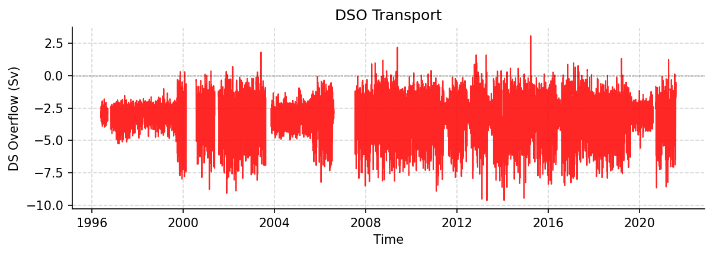

DSO Datasets
DSO_transport_hourly_1996_2021.nc
Dataset Overview
Project: Overflow time-series through Denmark Strait
Description: Denmark Strait Overflow
Source File: DSO_transport_hourly_1996_2021.nc
Data Product: Overflow time-series through Denmark Strait
License: CC-BY-4.0
Date Created: 2021-12-06T19:37:07Z
Time Coverage: 1996-05-01 to 2021-08-07
Record Length: 221,514 observations (25.3 years)
Sampling Frequency: hourly
Citation:
Jochumsen, K., Moritz, M., Nunes, N., Quadfasel, D., Larsen, K. M. H., Hansen, B., Valdimarsson, H., and Jonsson, S.: Revised transport estimates of the Denmark Strait overflow, Journal of Geophysical Research: Oceans, 122, doi: http://doi.org/10.1002/2017JC012803, 2017.
Acknowledgement:
The DSO was generated by the University of Hamburg and Hafrannsóknastofnun / Marine and Freshwater Research Institute (Reykjavik, Iceland) with support from NACLIM (no. 308299), until 2016, and from RACE II (no. 03F0729B, until 2018), RACE-Synthese (no. 03F0825B, until 2020) German Federal Ministry for Education and Research (BMBF). Nordic WOCE, VEINS, MOEN (no. EVK2-CT-2002-00141), ASOF-W (no. EVK2-CT-2002-00149), THOR (grant agr. nr. 212643), AtlantOS, Blue Action.
Dataset Visualization
{kind=link}

Time series plot for DSO dataset.
Dataset Statistics
Total Variables: 1
Total Coordinates: 4
Dataset Size: 2.54 MB
Coordinate Information
The following table shows information about the dataset coordinates in the standardised version, including coordinate name remapping from the original, if any:
Coordinate |
Description |
Units |
Size |
Min Value |
Max Value |
Missing % |
|---|---|---|---|---|---|---|
DEPTH |
Depth: Depth below surface of the water |
m |
(1,) |
None |
None |
0.0% |
LATITUDE |
Latitude: Latitude north (WGS84) |
degree_north |
(1,) |
66.00 |
66.00 |
0.0% |
LONGITUDE |
Longitude: Longitude east (WGS84) |
degree_east |
(1,) |
-27.00 |
-27.00 |
0.0% |
TIME |
Time |
seconds since 1970-01-01T00:00:00Z |
(221514,) |
1996-05-01 |
2021-08-07 |
0.0% |
Variable Information
The following table shows the mapping from original variable names to standardized names, along with key statistics for each variable.
Variable |
Description |
Units |
Size |
Min Value |
Max Value |
Missing % |
|---|---|---|---|---|---|---|
DSO_tr → TRANS_DSO |
DS Overflow: Denmark Strait Overflow volume transport |
sverdrup |
(221514, 1) |
-9.66 |
3.08 |
8.3% |
Metadata (edits applied noted)
The following metadata describes this dataset:
Title: Volume transport timeseries in the North Atlantic
Summary: Time series of volume transport of the Denmark Strait Overflow (DSO) at about 66 degN. The transports are calculated through interpolation of mooring data between the maximum mooring depth at 660 m and 400 m above bottom. The time period is between 1996 and 2017; the time increment is 1 hour.
Description*: Denmark Strait Overflow
Program*: DSO
Project: Overflow time-series through Denmark Strait
Source: subsurface moorings
Id: OS_2GSR_DSO_D
Naming Authority: OceanSITES
License: CC-BY-4.0
Acknowledgment: The DSO was generated by the University of Hamburg and Hafrannsóknastofnun / Marine and Freshwater Research Institute (Reykjavik, Iceland) with support from NACLIM (no. 308299), until 2016, and from RACE II (no. 03F0729B, until 2018), RACE-Synthese (no. 03F0825B, until 2020) German Federal Ministry for Education and Research (BMBF). Nordic WOCE, VEINS, MOEN (no. EVK2-CT-2002-00141), ASOF-W (no. EVK2-CT-2002-00149), THOR (grant agr. nr. 212643), AtlantOS, Blue Action.
References: http://www.oceansites.org/tma/index.html
Weblink*: https://www.cen.uni-hamburg.de/en/icdc/data/ocean/denmark-strait-overflow.html
Platform: mooring
Platform Vocabulary: https://vocab.nerc.ac.uk/collection/L06/
Platform Code: DSO
Processing Level: Known bad data has been replaced with values based on surrounding data, Data interpolated, Data manually reviewed
Data Product*: Overflow time-series through Denmark Strait
Site Code: GSR
Array: GSR
Network: GSR
Time Coverage Start: 1996-05-01
Time Coverage End: 2021-08-07
Geospatial Lat Min: 66
Geospatial Lat Max: 66
Geospatial Lon Min: -27
Geospatial Lon Max: -27
Contributor Name: Armin Koehl, Armin Koehl
Contributor Role: principalInvestigator, publisher
Contributor Role Vocabulary: https://vocab.nerc.ac.uk/collection/G04/current/
Contributor Email: armin.koehl@uni-hamburg.de, armin.koehl@uni-hamburg.de
Contributor Id: https://orcid.org/0000-0002-9777-674X, https://orcid.org/0000-0002-9777-674X
Contributing Institutions*: University of Hamburg (IfM), Marine and Freshwater Research Institute (MFRI)
Contributing Institutions Vocabulary: https://edmo.seadatanet.org/report/1156, https://edmo.seadatanet.org/report/4766
Contributing Institutions Role: ,
Conventions: CF-1.8, ACDD-1.3, OceanSITES-1.5
featureType*: timeSeries
featureType_vocabulary: https://cfconventions.org/cf-conventions/v1.6.0/cf-conventions.html#_features_and_feature_types
Cdm Data Type: Station
Data Type: OceanSITES time series data
Source File*: DSO_transport_hourly_1996_2021.nc
Source Path*: ~/.amocatlas_data/DSO_transport_hourly_1996_2021.nc
Source Url*: https://www.cen.uni-hamburg.de/en/icdc/data/ocean/denmark-strait-overflow.html
Date Created: 2021-12-06T19:37:07Z
Date Modified: 2026-08-01T00:00:00Z
History: 2021-12-06T19:37:07Z OceanSITES file with provisional transport data sent to DAC by Ursula Schauer; 2026-08-14T11:57:40Z AMOCatlas: Corrupted DEPTH value in DSO_transport_hourly_1996_2021.nc marked as NaN (was 9.97e+36)
Processing Software: http://github.com/AMOCcommunity/amocatlas
Processing Version: v0.4.0
Processing Datasource*: dso
Format Version: 1.3
Applied Variable Mapping: {‘DSO_tr’: ‘TRANS_DSO’}
Keywords: OCEANOGRAPHY: PHYSICAL >Currents, OCEANOGRAPHY: GENERAL >North Atlantic oceanography, OCEANOGRAPHY: GENERAL >Time series experiments
Keywords Vocabulary: AGU Index Terms
Update Interval: void
Comment: The array instrument data that the transports are based on are available from Institute of Oceanography (Hamburg) and the Marine Research Institute (Reykjavik, Iceland)
Data Mode: D
Wmo Platfrom Code: void
Area: North Atlantic Ocean
Geospatial Lat Units: degrees_north
Geospatial Lon Units: degrees_east
Geospatial Vertical Positive: down
Geospatial Vertical Units: meter
Time Coverage Duration: P21Y4M17D
Time Coverage Resolution: PT1H
Netcdf Version: 3.5
Data Assembly Center: void
Qc Indicator: excellent
Instituion: Institute of Oceanography (Hamburg) and the Marine Research Institute (Reykjavik, Iceland)